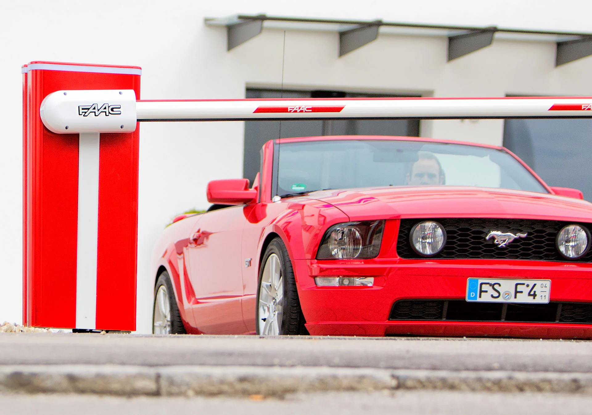
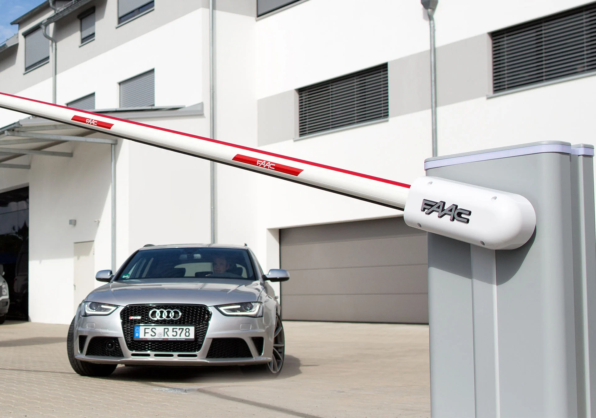
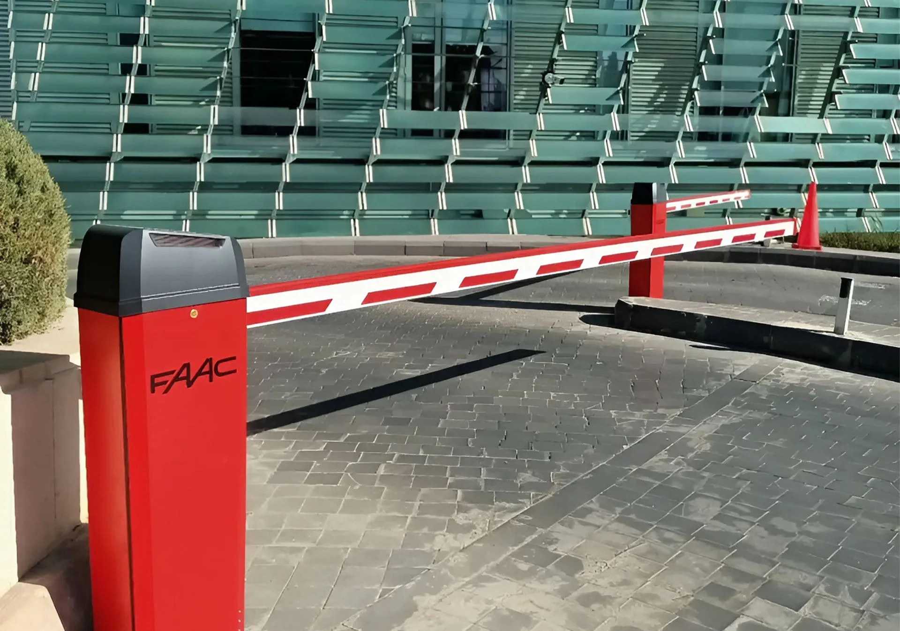
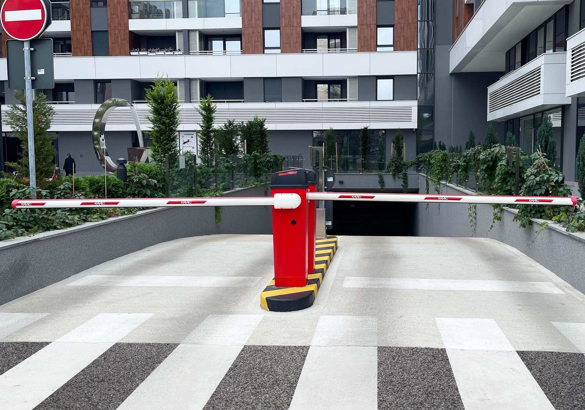
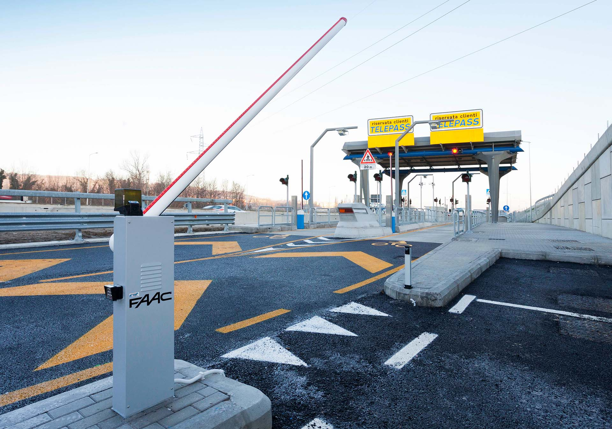
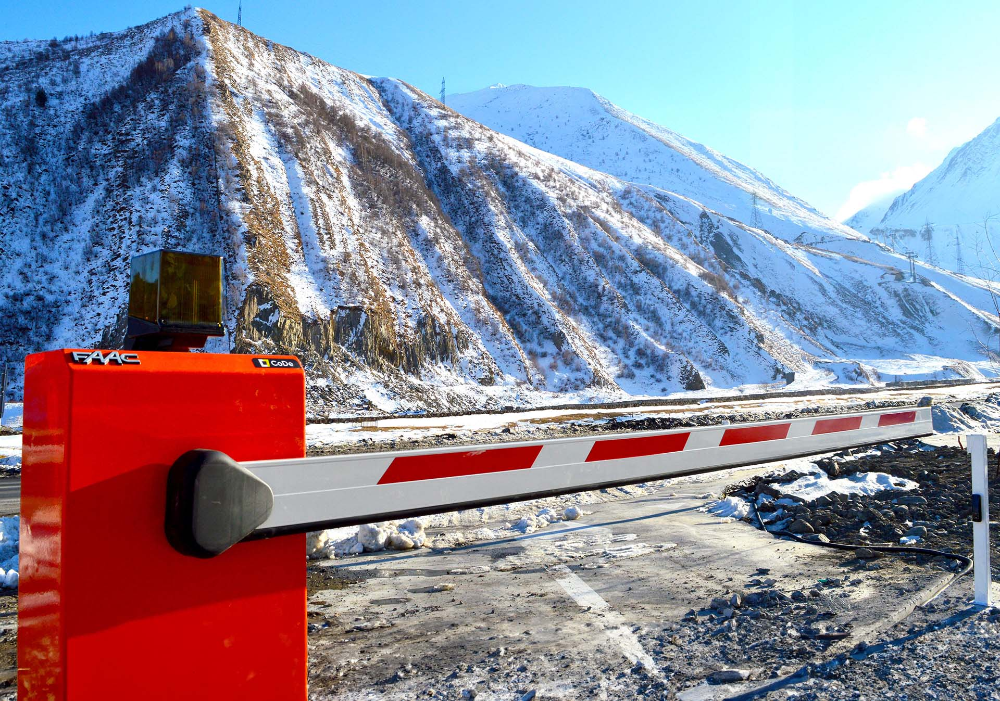
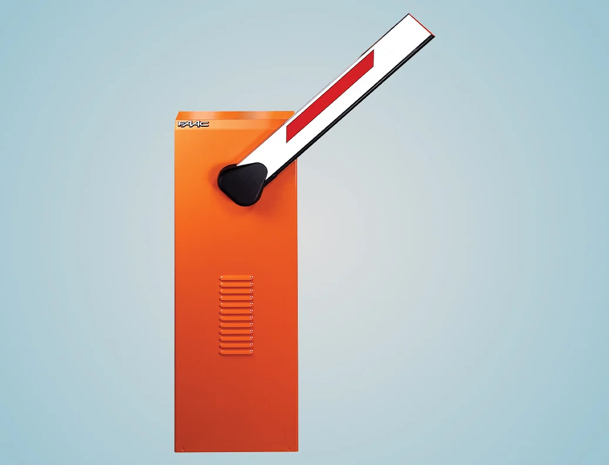
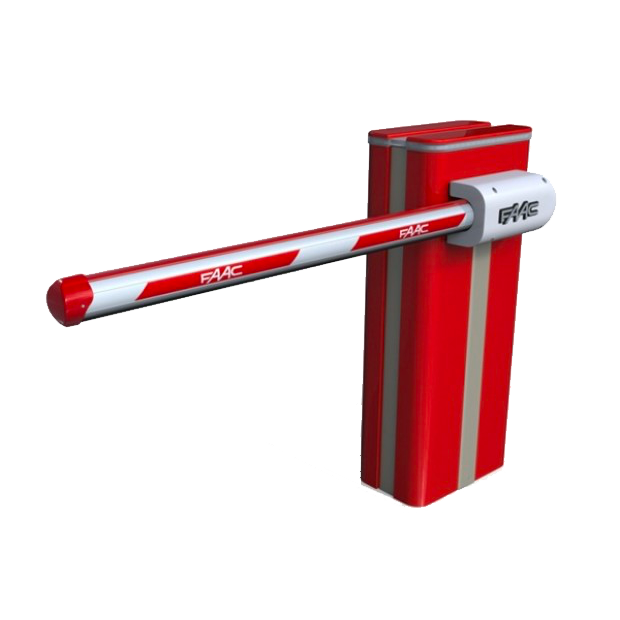

Barreras automáticas para carriles desde 2 m hasta 8 m






Las barreras automáticas son la solución ideal para gestionar y controlar los accesos vehiculares en una amplia variedad de contextos. Desde áreas residenciales hasta entradas de empresas, zonas industriales, peajes y estacionamientos públicos o privados, nuestras barreras están diseñadas para ofrecerte la máxima seguridad y fiabilidad.
Con las barreras automáticas FAAC puedes regular el flujo de vehículos de manera efectiva, impidiendo el acceso no autorizado a tus espacios y garantizando que solo quienes tienen permiso puedan estacionar en tus áreas de aparcamiento.
Con palos de 2 a 8 metros y un tiempo de apertura que va de 1,5 a 6 segundos, nuestras barreras son perfectas para cualquier tipo de acceso, incluso en condiciones de tráfico intenso.
Diseñadas con materiales robustos y de alta calidad, las barreras FAAC resisten a la intemperie y te aseguran un funcionamiento impecable y duradero en el tiempo.
Cualquiera que sea el tamaño o configuración de tu acceso, FAAC tiene la barrera automática ideal para ti.
Estas son las tres tecnologías que distinguen hoy en día las barreras automáticas FAAC.
Cada una está diseñada para responder a necesidades específicas, ofreciéndote la máxima flexibilidad.

La tecnología hidráulica ha sido siempre símbolo de la excelencia FAAC y aún hoy es nuestro orgullo. Fuimos los primeros en introducirla, en 1965, en el ámbito de automatizaciones para portones.
Emplear hidráulica en este sector requiere un nivel tecnológico muy alto y precisión absoluta en el ensamblaje.
Esto nos permite ofrecer todos los beneficios de esta tecnología, aplicable en múltiples contextos con un rendimiento siempre excelente.
FAAC B614 está diseñada para garantizar la máxima seguridad durante su funcionamiento, gracias al motor electromecánico con codificador integrado.
Este sistema detecta con precisión posibles obstáculos y activa automáticamente la inversión del movimiento, protegiendo así vehículos y peatones.
Puedes ajustar la velocidad de movimiento de la barrera según las necesidades específicas de tu espacio, ya sea un área residencial o comercial.
Con un movimiento fluido y controlado, la barrera automática FAAC B614 asegura una gestión óptima del tráfico vehicular.
El equipo electrónico, ubicado en la parte superior de la barrera, ofrece fácil acceso para programación y mantenimiento.
La interfaz intuitiva simplifica la instalación y la gestión diaria, reduciendo tiempo y costos operativos.

FAAC B680H es una barrera automática revolucionaria que combina el motor Brushless con la tecnología hidráulica, ofreciendo un rendimiento excepcional incluso en condiciones de uso continuo.
Sus resortes de duración “infinita” están diseñados para superar los 2.000.000 de ciclos de apertura y cierre, haciendo de FAAC B680H la solución perfecta para regular tráfico vehicular intenso en cualquier entorno: residencial, condominial e industrial.
La cubierta removible de la barrera FAAC B680H está disponible en cuatro elegantes colores RAL (Rojo Fuego, Azul Acero, Blanco Puro, Gris Aluminio) y en versión acero INOX.
De este modo, puedes personalizar la barrera para integrarla perfectamente con la estética del entorno donde se instalará.
FAAC B680H está diseñada con un único modelo de barrera capaz de gestionar todas las longitudes de asta, reduciendo costos de gestión y mejorando la eficiencia operativa.
